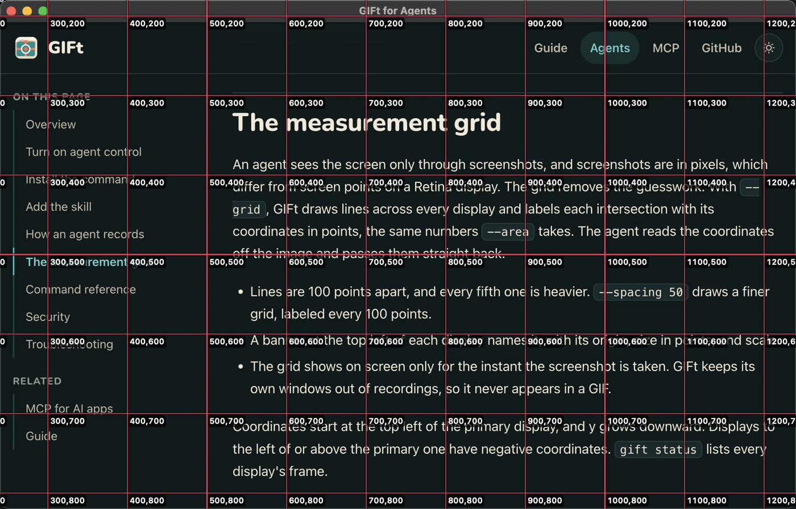

Overview
With agent control on, an agent can:
- take a screenshot with a measurement grid drawn in, to find exactly where the change is,
- record that area, or a whole window, for a few seconds or while it keeps working,
- open the result in Quick Look in front of you, and give you the file to attach to a pull request.
GIFt does the capture under its own Screen Recording permission, so the agent does not need that permission. Recordings stay on your Mac.
Agents reach GIFt in one of two ways. Both offer the same six operations.
Which one? If your agent has a shell, use the command and the skill. The skill is loaded only when a task needs it, while MCP tools are loaded into every conversation. Use MCP when the app has no shell.
Turn on agent control
Agent control is off when you install GIFt. While it is off, GIFt refuses every request from the command and from MCP.
- Click the GIFt icon in the menu bar and choose Settings…
- Open Agents.
- Turn on Allow agents.
Read Security before you turn it on. GIFt also needs Screen Recording permission, which the guide covers.
Install the command
In Settings, under Agents, click Install… next to gift command. macOS asks for your password, and GIFt links /usr/local/bin/gift to itself. That folder is on the default path of every shell, so agents find gift without changes to your shell profile.
Check it from a terminal:
gift statusIf GIFt is not running, gift starts it in the background first.
To skip the install, call the executable inside the app by its full path. It behaves the same way whenever you give it a command:
/Applications/GIFt.app/Contents/MacOS/GIFt statusThe command and the app are the same file, so they always match. After you update GIFt, the installed command uses the new version with nothing to reinstall.
Add the skill
The skill is an instruction file that tells an agent when and how to record: the grid workflow, the commands, and what each error means. It ships inside GIFt, and gift skill prints it, so it always matches your installed version.
Claude Code
Install it as a personal skill, available in every project:
mkdir -p ~/.claude/skills/gift
gift skill > ~/.claude/skills/gift/SKILL.mdClaude Code loads the skill when a task calls for it, such as "record a GIF of the new settings page." Run the second line again after you update GIFt.
Other agents
Agents keep skills and instruction files in different places. The simplest route is to let the agent install the skill where its own harness expects it:
Run `gift skill` and install its output as a skill, or add it to your
standing instructions, so you can record GIFs of your work with GIFt.You can also paste the output of gift skill into an AGENTS.md or a similar instructions file. The skill's source is on GitHub.
How an agent records
A typical run, after an agent changes a page in a web app:
# 1. Find the thing that changed. The grid labels every 100 points.
gift screenshot --grid
{ "path": "/var/folders/…/Screenshots/gift-1791211329847.png" }
# 2. Record just that area while driving the page
gift record --area 120,340,800,500
# ...the agent clicks through the new flow...
gift stop
{ "path": "/Users/you/Movies/gift-1791211346917.gif" }
# 3. Put it in front of you
gift show /Users/you/Movies/gift-1791211346917.gifFor a fixed length, gift record --area 120,340,800,500 --seconds 5 records, stops, and prints the path in one step. --window ID records a window instead of an area; gift windows lists the IDs.
Recordings from agents save straight to your output folder in your chosen format, or in the one the agent asks for. They skip the review window, so nothing waits on a click, and they leave your clipboard alone.
The measurement grid
An agent sees the screen only through screenshots. Screenshots are in pixels, and on a Retina display one screen point is two pixels. With --grid, GIFt draws lines across every display and labels each intersection with its coordinates in points, the same numbers --area takes. The agent reads the coordinates off the image and passes them straight back.

gift screenshot --grid --area 240,180,1000,640 of this page. The labels give screen points, so the heading starts near 500,300.- Lines are 100 points apart, and every fifth one is heavier.
--spacing 50draws a finer grid, labeled every 100 points. - A banner at the top left of each display names it, with its origin, size in points, and scale.
- The grid shows on screen only for the instant the screenshot is taken. GIFt keeps its own windows out of recordings, so it never appears in a GIF.
Coordinates start at the top left of the primary display, and y grows downward. Displays to the left of or above the primary one have negative coordinates. gift status lists every display's frame.
Command reference
Every command prints JSON on standard output and errors on standard error. gift help prints this reference.
| Command | What it does |
|---|---|
gift status | State, output folder, whether Screen Recording is granted, and each display's frame and scale. |
gift windows | Open windows, frontmost first, with IDs, apps, titles, and frames. |
gift screenshot | Saves a PNG and prints its path. --area X,Y,W,H limits it to an area (default: the primary display). --grid draws the grid in. --spacing N sets the line spacing, 25 points or more. |
gift record | Starts recording --area X,Y,W,H or --window ID. With --seconds N, stops after N seconds and prints the file's path; without it, returns as soon as frames are being captured. --format gif|mp4 and --fps 8|10|12|15|24|30 apply to this recording only. |
gift stop | Stops, waits for the file, and prints its path. --discard throws the recording away. While idle, prints the last recording's path. |
gift show PATH | Opens a file in Quick Look on your screen. |
gift skill | Prints the agent skill. |
gift mcp | Serves the same operations as MCP tools over standard input and output. See MCP. |
Exit codes
| Code | Meaning |
|---|---|
0 | Success. |
1 | GIFt reported a failure. The message says why. |
2 | Usage error, such as a malformed area. |
3 | GIFt is not running and could not be started. |
4 | GIFt does not have Screen Recording permission. |
5 | Agent control is off. |
Security
The command and MCP reach GIFt over a socket at ~/Library/Application Support/GIFt/agent.sock. Its folder and the socket itself are readable only by your user account, and GIFt checks that every caller runs as you. Other accounts on the Mac, other machines, and web pages cannot reach it.
What turning it on allows. While agent control is on, any program running as you can take screenshots and record through GIFt, without Screen Recording permission of its own. A screenshot shows only a brief flash of the grid, if it uses one. Recordings show GIFt's outline and the recording icon in the menu bar. Turn agent control off when you are not using it.
Recordings stay on your Mac. GIFt uploads nothing, and the agent gets only file paths and, through MCP, the screenshots it asks for.
Troubleshooting
gift: command not found
Install the command from Settings, under Agents, or use the full path, /Applications/GIFt.app/Contents/MacOS/GIFt.
Exit code 5: agent control is off
Turn on Allow agents in Settings, under Agents.
Exit code 4: no Screen Recording permission
GIFt opens its Settings window at the permission. Grant it, let macOS reopen GIFt if it asks, and try again. An agent cannot grant it for you.
Exit code 3: GIFt could not be started
Open GIFt from Applications once. If you moved the app after installing the command, click Reinstall… in Settings so the link points at the new location.
The agent's sandbox blocks the command
Some agents run commands in a sandbox that cannot reach sockets outside the project. Allow the agent to connect to ~/Library/Application Support/GIFt/agent.sock, or let it run gift outside the sandbox.